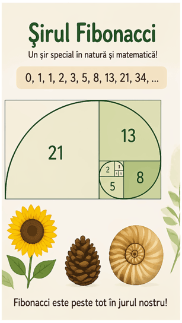

 |
Șirul lui Fibonacci și Natura
|
||||
|
Șirul lui Fibonacci este un șir de numere în care fiecare termen, începând cu al treilea, se obține ca sumă a celor doi termeni anteriori. Acest șir apare frecvent în matematică, dar și în natură, în forma petalelor florilor, a conurilor de brad sau a spiralelor cochiliilor. De aceea, șirul lui Fibonacci este considerat unul dintre cele mai interesante exemple de legătură dintre matematică și lumea înconjurătoare. |